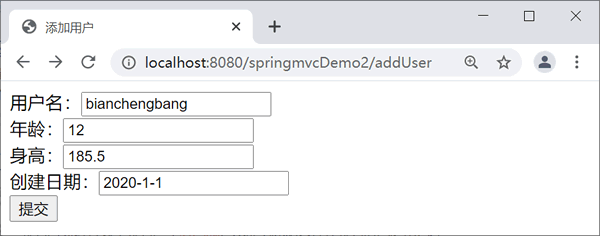
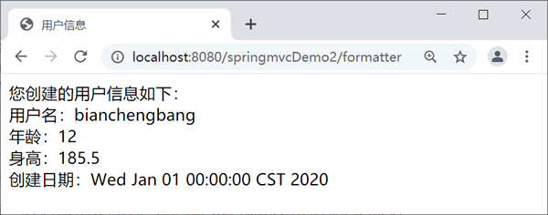

首页 > 编程笔记
Spring MVC数据格式化（Formatter）
Spring MVC 框架的 Formatter<T> 与 Converter<S, T> 一样，也是一个可以将一种数据类型转换成另一种数据类型的接口。不同的是，Formatter 的源类型必须是 String 类型，而 Converter 的源类型可以是任意数据类型。Formatter 更适合 Web 层，而 Converter 可以在任意层中。所以对于需要转换表单中的用户输入的情况，应该选择 Formatter，而不是 Converter。
在 Web 应用中由 HTTP 发送的请求数据到控制器中都是以 String 类型获取，因此在 Web 应用中选择 Formatter<T> 比选择 Converter<S, T> 更加合理。
在 Web 应用中由 HTTP 发送的请求数据到控制器中都是以 String 类型获取，因此在 Web 应用中选择 Formatter<T> 比选择 Converter<S, T> 更加合理。
内置的格式化转换器
Spring MVC 提供了几个内置的格式化转换器，具体如下。- NumberFormatter：实现 Number 与 String 之间的解析与格式化。
- CurrencyFormatter：实现 Number 与 String 之间的解析与格式化（带货币符号）。
- PercentFormatter：实现 Number 与 String 之间的解析与格式化（带百分数符号）。
- DateFormatter：实现 Date 与 String 之间的解析与格式化。
自定义格式化转换器
自定义格式化转换器就是编写一个实现 org.springframework.format.Formatter 接口的 Java 类。该接口声明如下。public interface Formatter<T>这里的 T 表示由字符串转换的目标数据类型。该接口有 parse 和 print 两个接口方法，自定义格式化转换器类必须覆盖它们。
public T parse(String s, java.util.Locale locale) public String print(T object, java.util.Locale locale)parse 方法的功能是利用指定的 Locale 将一个 String 类型转换成目标类型，print 方法与之相反，用于返回目标对象的字符串表示。
示例
下面通过具体应用讲解自定义格式化转换器的用法，本节示例基于《@Controller和@RequestMapping注解》一节中的 springmvcDemo2 程序。1. 创建实体类
创建 net.biancheng.po 包，并在该包中创建 User 实体类，代码如下。
package net.biancheng.po;
import java.util.Date;
public class User {
private String name;
private Integer age;
private Double height;
private Date createDate;
/**省略setter和getter方法*/
}
2. 创建控制器类
创建 net.biancheng.controller 包，并在该包中创建 FormatterController 控制器类，代码如下。
package net.biancheng.controller;
import org.springframework.stereotype.Controller;
import org.springframework.ui.Model;
import org.springframework.web.bind.annotation.RequestMapping;
import net.biancheng.po.User;
@Controller
public class FormatterController {
@RequestMapping("/formatter")
public String myFormatter(User us, Model model) {
model.addAttribute("user", us);
return "showUser";
}
}
3. 创建自定义格式化转换器类
创建 net.biancheng.formatter 包，并在该包中创建 MyFormatter 的自定义格式化转换器类，代码如下。
package net.biancheng.formatter;
import java.text.ParseException;
import java.text.SimpleDateFormat;
import java.util.Date;
import java.util.Locale;
import org.springframework.format.Formatter;
import org.springframework.stereotype.Component;
@Component
public class MyFormatter implements Formatter<Date> {
SimpleDateFormat dateFormat = new SimpleDateFormat("yyyy-MM-dd");
public String print(Date object, Locale arg1) {
return dateFormat.format(object);
}
public Date parse(String source, Locale arg1) throws ParseException {
return dateFormat.parse(source); // Formatter只能对字符串转换
}
}
4. 注册格式化转换器
在 springmvc-servlet.xml 配置文件中注册格式化转换器，具体代码如下：
<!--注册MyFormatter -->
<bean id="conversionService"
class="org.springframework.format.support.FormattingConversionServiceFactoryBean">
<property name="formatters">
<set>
<bean class="net.biancheng.formatter.MyFormatter" />
</set>
</property>
</bean>
<mvc:annotation-driven conversion-service="conversionService" />
5. 创建相关视图
创建添加用户页面 addUser.jsp，代码如下。
<%@ page language="java" contentType="text/html; charset=UTF-8"
pageEncoding="UTF-8"%>
<!DOCTYPE html PUBLIC "-//W3C//DTD HTML 4.01 Transitional//EN" "http://www.w3.org/TR/html4/loose.dtd">
<html>
<head>
<meta http-equiv="Content-Type" content="text/html; charset=UTF-8">
<title>添加用户</title>
</head>
<body>
<form action="${pageContext.request.contextPath}/formatter" method="post">
用户名：<input type="text" name="name" />
<br>
年龄：<input type="text" name="age" />
<br>
身高：<input type="text" name="height" />
<br>
创建日期：<input type="text" name="createDate" />
<br>
<input type="submit" value="提交" />
</form>
</body>
</html>
创建信息显示页面 showUser.jsp，代码如下。
<%@ page language="java" contentType="text/html; charset=UTF-8"
pageEncoding="UTF-8"%>
<!DOCTYPE html PUBLIC "-//W3C//DTD HTML 4.01 Transitional//EN" "http://www.w3.org/TR/html4/loose.dtd">
<html>
<head>
<meta http-equiv="Content-Type" content="text/html; charset=UTF-8">
<title>用户信息</title>
</head>
<body>
您创建的用户信息如下：
<br />
<!-- 使用EL表达式取出model中的user信息 -->
用户名：${user.name }
<br />
年龄：${user.age }
<br />
身高：${user.height }
<br />
创建日期：${user.createDate }
</body>
</html>
6. 测试运行
访问地址：http://localhost:8080/springmvcDemo2/addUser。

addUser.jsp
addUser.jsp

showUser.jsp
showUser.jsp
关注公众号「站长严长生」，在手机上阅读所有教程，随时随地都能学习。内含一款搜索神器，免费下载全网书籍和视频。

微信扫码关注公众号